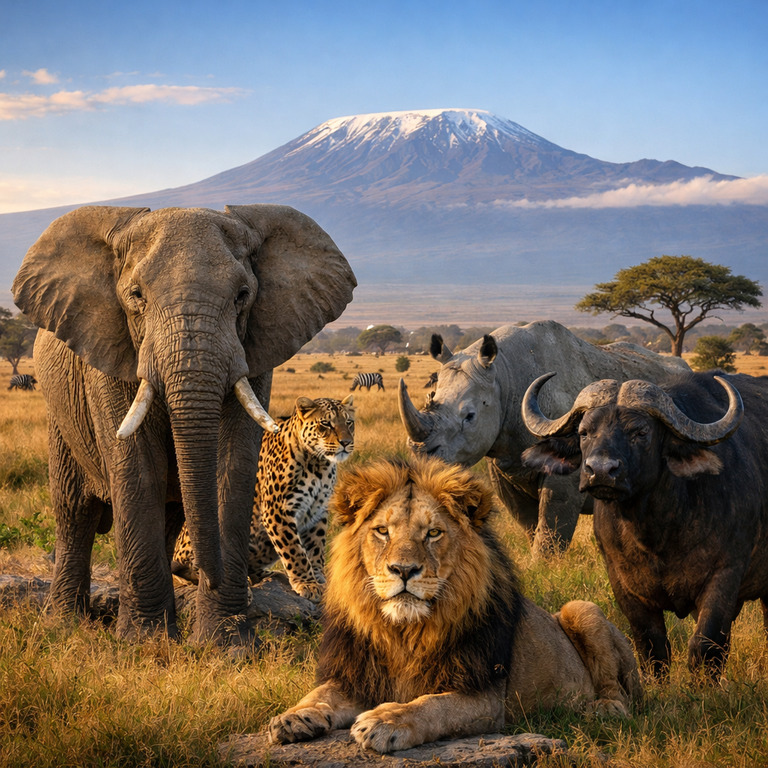

The Big Five in Kenya: What Every Hiker & Traveler Should Know

Kenya is world-famous for its incredible wildlife, and at the heart of every safari adventure is the legendary “Big Five.” These five animals—lion, elephant, buffalo, leopard, and rhino—are among the most iconic and sought-after species for travelers, wildlife photographers, and nature lovers.
If you’re planning a safari, a nature hike near a conservancy, or even a weekend getaway from Nairobi, understanding the Big Five adds depth and appreciation to your experience in the wild.
Why Are They Called the Big Five?
The term “Big Five” originally referred to the five most challenging animals to track on foot. Today, the name represents Kenya’s most celebrated wildlife species—each powerful, unique, and a symbol of conservation efforts across the country.
1. Lion

The lion is known as the “King of the Savannah.” Kenya hosts several prides across national parks and conservancies. Hikers and travelers may spot them resting under shade, patrolling territory, or basking during golden-hour sunrise.
- Behavior: Most active at dawn and dusk
- Where commonly seen: Savannah grasslands and open plains
- Safety tip: Always keep your distance and avoid walking near bushy areas at dusk or dawn
2. Elephant

Elephants are admired for their intelligence, size, and strong family bonds. Seeing a herd during a safari is one of the most breathtaking experiences in Kenya.
- Behavior: Gentle unless threatened; highly protective of calves
- Where commonly seen: Forest edges, savannah, and water points
- Safety tip: Never approach a lone bull or a herd with young calves
3. Buffalo

Often underestimated, buffalo are powerful and highly alert. They are usually found in large herds and are known for their unpredictable nature.
- Behavior: Moves in herds; can be defensive if cornered
- Where commonly seen: Grasslands, marsh areas, and near water
- Safety tip: Avoid walking too close to thick bushes where buffalo may hide
4. Leopard

Leopards are shy, elusive, and excellent climbers. Spotting one is a rare highlight for any visitor.
- Behavior: Nocturnal and solitary
- Where commonly seen: Trees, rocky outcrops, and riverine forests
- Safety tip: Stay with your guide when hiking near forested areas
5. Rhino

Kenya is home to both black and white rhinos, protected through extensive conservation programs. Seeing one of these endangered giants in the wild is truly unforgettable.
- Behavior: Shy but territorial
- Where commonly seen: Conservancies and protected reserves
- Safety tip: Never walk toward a rhino; they have poor eyesight but a powerful charge
The Big Five and Conservation
Conservation efforts in Kenya have helped protect these species from poaching, habitat loss, and human-wildlife conflict. Every visit—whether a guided hike or safari—supports local communities and wildlife protection initiatives.
Tips for Seeing the Big Five Safely
- Always follow your guide’s instructions
- Keep a safe distance from all wildlife
- Avoid loud noises or sudden movements
- Use binoculars instead of approaching animals
- Never hike off designated trails in wildlife zones
Final Thoughts
The Big Five are more than just wildlife icons—they are a symbol of Kenya’s natural heritage. Whether you're hiking near forest edges, exploring conservancies, or enjoying a weekend safari, understanding these magnificent animals enhances your experience and deepens your connection to the wild.